Datos al 6 de noviembre de 2026, 19:52 (hora de Corea): cierre de EE. UU. del 5 de noviembre y cierre de Corea del 6 de noviembre · Reverificado el 7 de noviembre de 2026 · stayhungryasi.com
No incluye la sesión de EE. UU. del 6 de noviembre.
Convenciones: las cifras son hechos según su fuente. 'Estimación' indica juicio del autor, y las probabilidades de los escenarios son juicio subjetivo del autor. El informe pasó por dos rondas de verificación completa, y todos los datos corregidos o eliminados quedan en la tabla de la sección 2.
Aviso de conflicto de interés: esta investigación se elaboró con la IA de Anthropic (Claude), y en el texto aparecen los resultados del S-1 de Anthropic y su calendario de salida a bolsa. No constituye una recomendación de inversión.
Lo esencial, resumido en 12 tarjetas. Haga clic en una imagen para verla en grande.
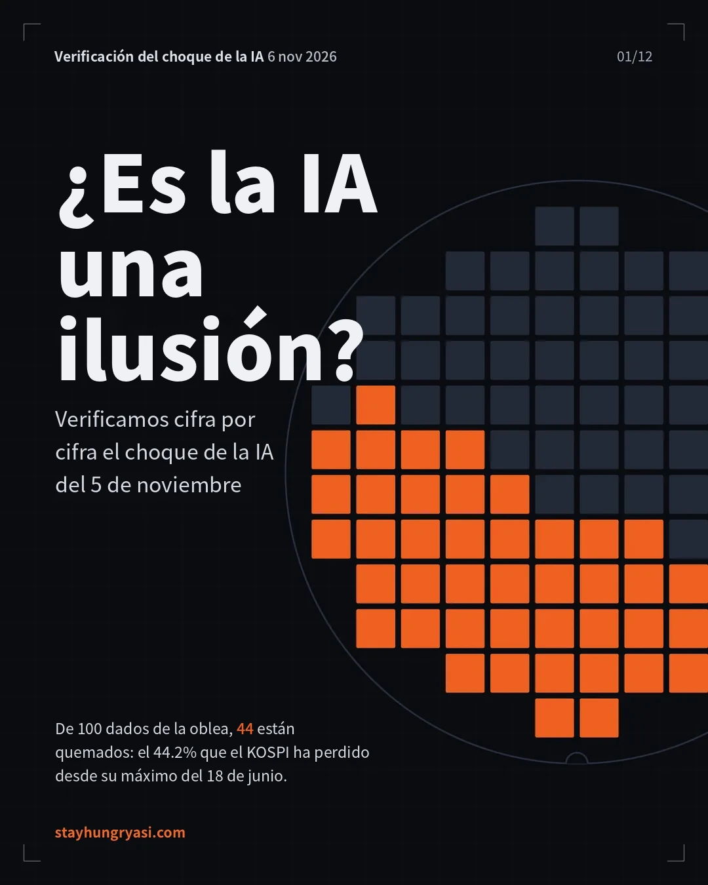
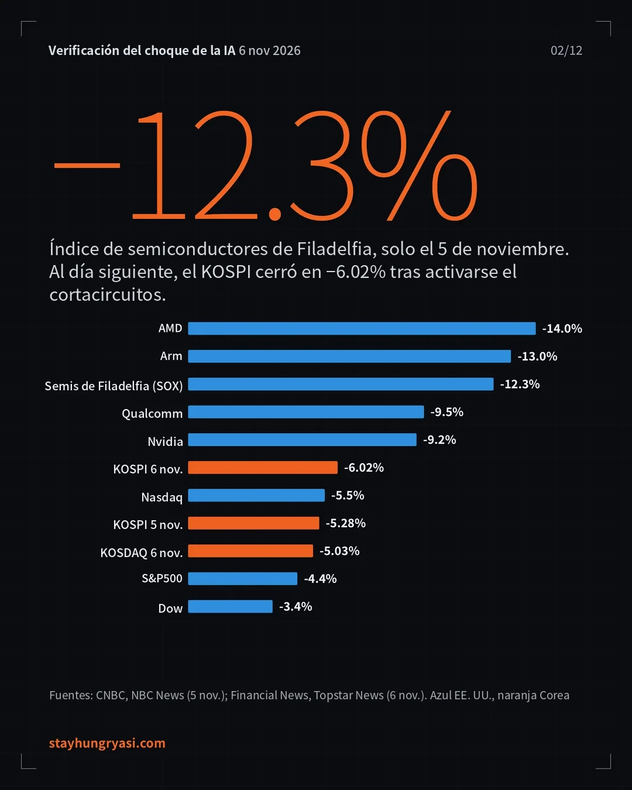
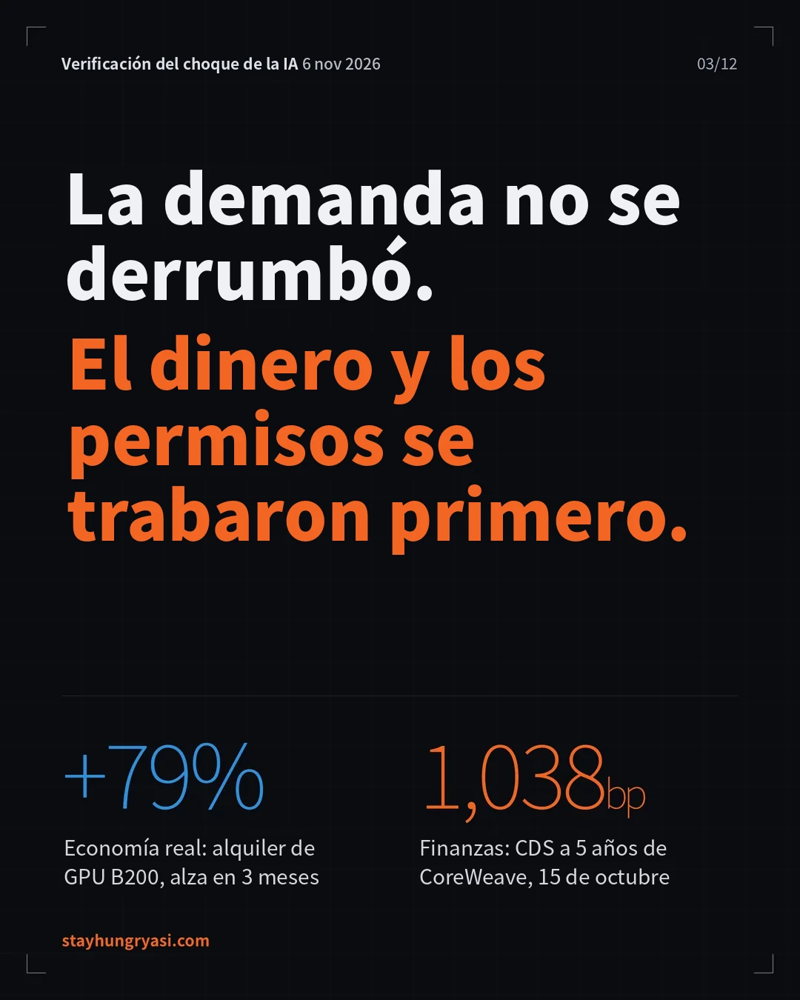
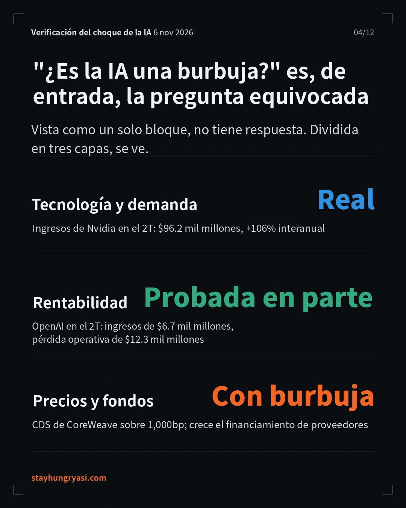
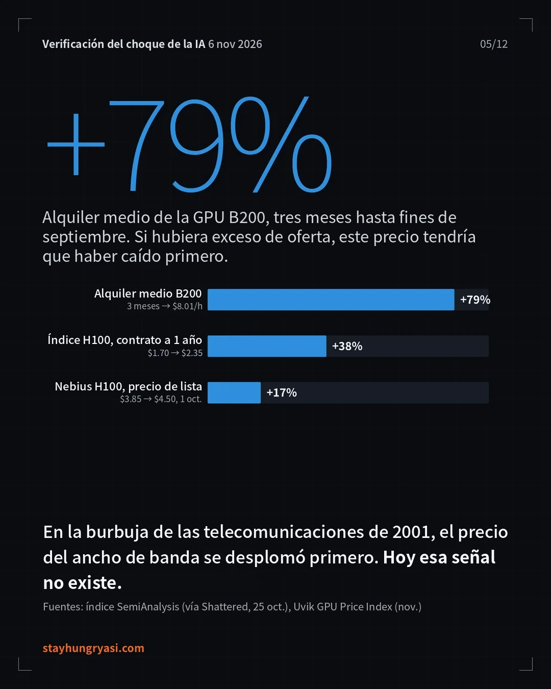
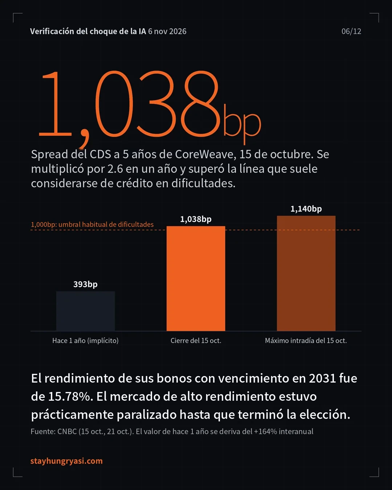
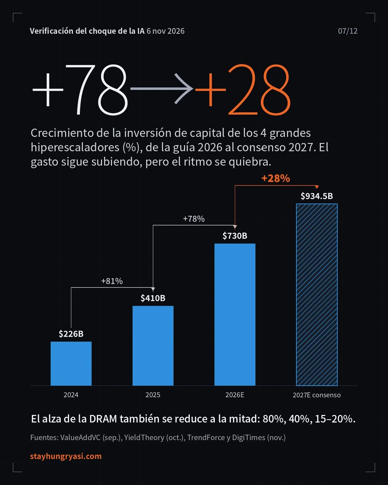
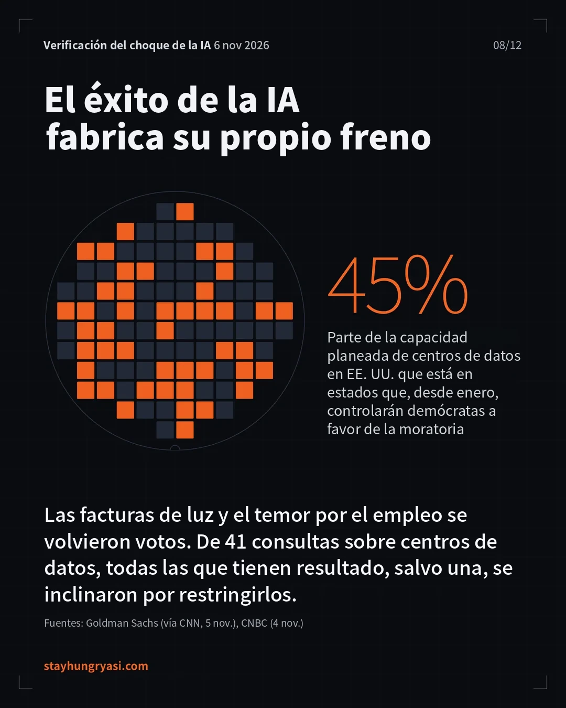
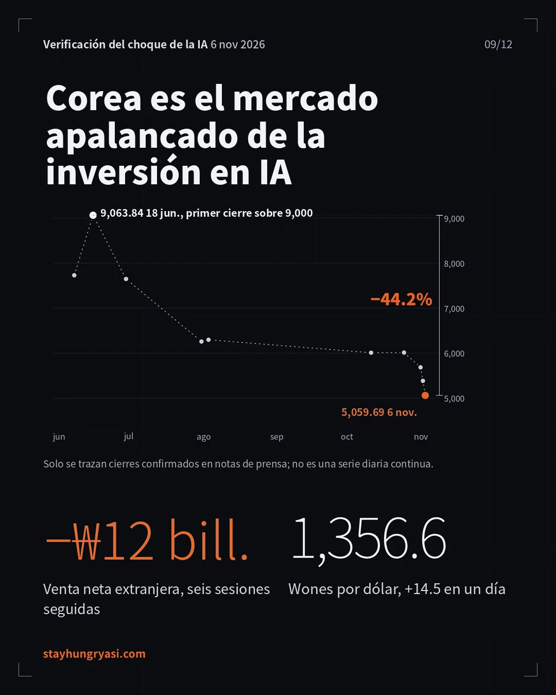
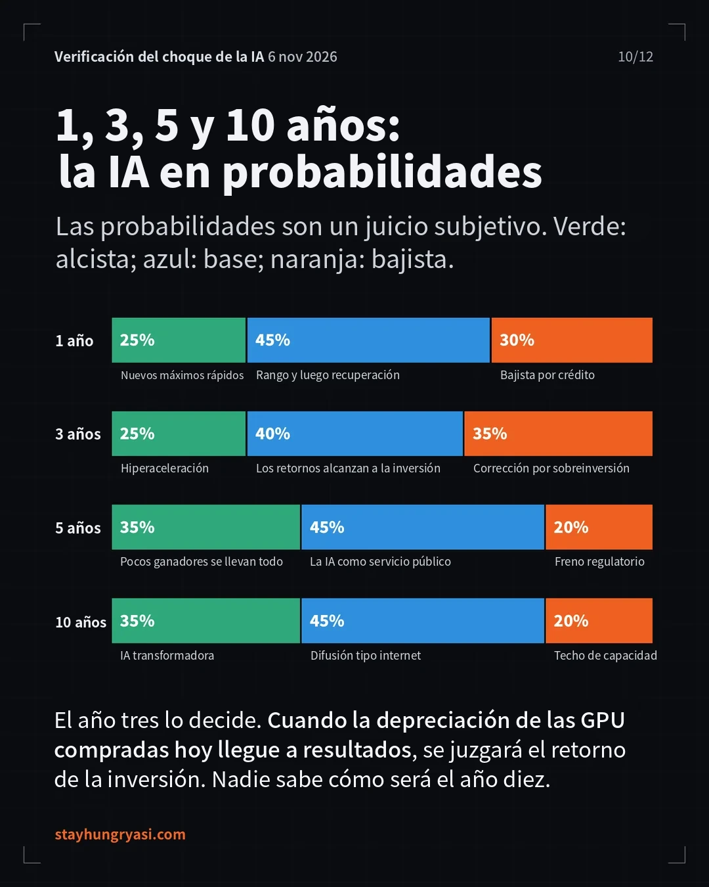
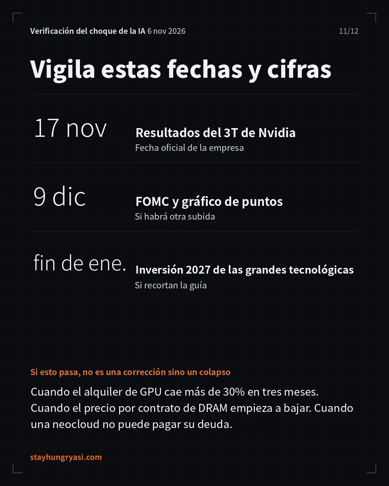
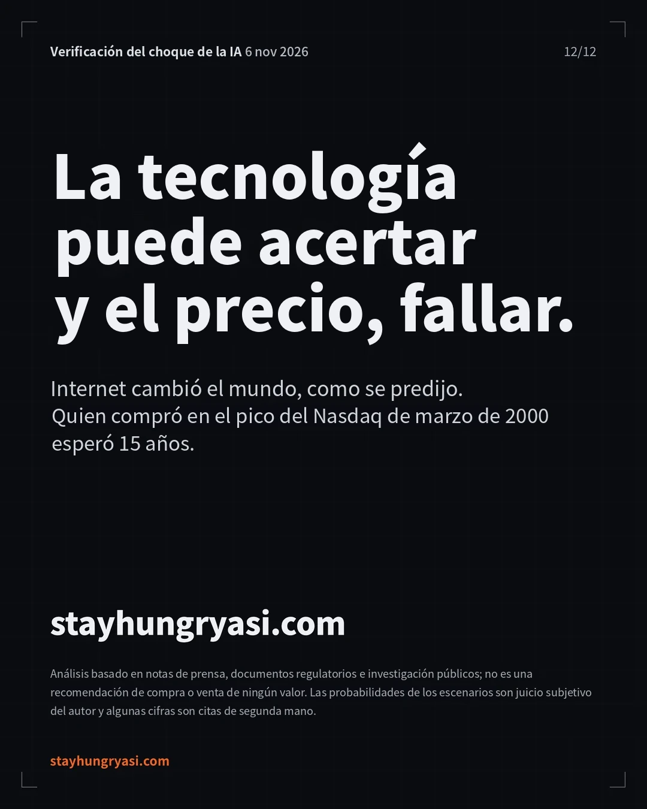
Los resultados dispares de Qualcomm y Arm en la noche del 4 de noviembre se sumaron a la amplia victoria demócrata en las elecciones intermedias del 3 de noviembre; el 5 de noviembre se desplomaron las acciones de infraestructura de IA en EE. UU., y el 6 de noviembre el golpe se extendió a Asia.
Figura 1. Dos días de choque: variación por acción e índice
| Rubro | Hecho | Fuente y fecha |
|---|---|---|
| Índices de EE. UU. | Nasdaq -5.5%, S&P500 cerca de -4.4%, Dow cerca de -1,833 puntos (-3.4%) | CNBC, 5/11 |
| Capitalización | Los Siete Magníficos perdieron más de US$1 billón; solo Nvidia, más de US$440 mil millones | CNBC, 5/11 |
| Detonante político | Los demócratas controlan el Senado y la Cámara de Representantes. De 41 consultas populares sobre centros de datos en 10 estados, todas las que tienen resultado se inclinaron por restringirlos, salvo Harwood, en Dakota del Norte | CNBC, 4/11 |
| Detonante de resultados | Arm -13%, Qualcomm -9.5% (resultados publicados tras el cierre del 4/11) | NBC News, 5/11 |
| Mercado coreano | Cortacircuitos de nivel 1 a las 09:03 y sidecar de venta a las 09:34. Tras caer en la sesión hasta 4,911.28 (-8.78%), cerró en 5,059.69 (-6.02%). Acumulado de dos días: -10.98% | Financial News y Topstar News, 6/11 |
| Tipo de cambio | 1,356.6 wones por dólar (+14.5 wones, +1.08%). Mayor alza desde el 12/5 y nivel más alto desde el 1/10. Máximo en la sesión de 1,362.2 wones | Nate (ChosunBiz) y Betanews, 6/11 |
La lectura del mercado no fue que "la IA no funciona". El diagnóstico común de los analistas es que la expectativa de que la expansión de centros de datos será más lenta y más cara está reescribiendo las expectativas de crecimiento de toda la cadena de suministro (Fox Business, 5/11). Han Ji-young, analista de Kiwoom Securities, también calificó el desplome de las acciones de IA en EE. UU. como una venta de pánico, dado que no se había confirmado ni el alcance de la regulación, ni retrasos reales, ni una caída de la demanda de IA (Newspim, 6/11).
Se volvieron a cotejar las cifras del borrador con sus fuentes originales. Se registran como confirmadas, complementadas, corregidas o no utilizadas.
| Veredicto | Dato | Resultado de la verificación |
|---|---|---|
| Confirmado | Variación de índices y acciones de EE. UU. | Nasdaq -5.5%, S&P -4.4%, índice de semiconductores -12.3%, Nvidia -9.2%. Coinciden varios medios |
| Confirmado | Cierre y mínimo del KOSPI | 5,059.69 (-6.02%, -324.11 puntos), mínimo en la sesión de 4,911.28 (-8.78%). Cortacircuitos de nivel 1 a las 09:03. Coinciden 3 fuentes: BusinessKorea, Topstar News y Newspim |
| Confirmado | Fecha de resultados de Nvidia | 17/11 (martes) tras el cierre, según aviso oficial de la empresa (28/10). El 18/11 que mostraban algunos rastreadores era una estimación previa a la confirmación |
| Confirmado | Alza de la Fed en septiembre | 16/9, por unanimidad, +25 pb → 3.75-4.00%, primera alza desde julio de 2023 |
| Confirmado | KOSPI supera 9,000 | El 18/6 cerró en 9,063.84, su primer cierre histórico sobre 9,000; el 19/6 tocó 9,331 en la sesión |
| Complementado | Ventas netas extranjeras del 6/11 | Difieren según la fuente entre ₩2.7692 y ₩2.8395 billones (distinto momento de cómputo). Se expresa como rango |
| Complementado | Ingresos del 3T de Anthropic | Difieren: US$16.8 mil millones (citado por CNBC) y US$17 mil millones (cómputo del S-1). Como reconoce la reventa por su monto bruto, no es directamente comparable con competidores que reportan en neto |
| Complementado | "Cerca de 3/4 del crecimiento del PIB del 1T" | No es una cifra oficial del BEA, sino una estimación calculada por analistas |
| Complementado | Inversión de capital/flujo de caja operativo de Alphabet 121%, FCF de los hiperescaladores -90% | Fuente única: un sitio que agrega investigación. No se pudo verificar de forma cruzada |
| Complementado | Trayectoria posterior de la Fed | Pausa el 28/10 (10 votos contra 2). La probabilidad de alza el 9/12 de cerca de 81% es una cifra al 5/10 y pudo cambiar tras esta caída |
| Corregido | "Máximo del Nasdaq de 1999" | Lo correcto es el máximo de marzo de 2000. La recuperación llegó en 2015 (unos 15 años), así que la conclusión no cambia |
| Corrección (2.ª ronda) | Caída de Samsung Electronics y SK hynix | Precio intradía → sustituido por precio de cierre. ₩188,700 (-6.35%) y ₩1,132,000 (-10.44%). Caída desde máximos -51.0%→-49.0% y -62.7%→-62.1% |
| Eliminado (2.ª ronda) | "El peor día del S&P500 y del Dow desde abril de 2025" | No se pudo confirmar en el original; se eliminó |
| Eliminado (2.ª ronda) | Variación por sector y nivel del índice al activarse el cortacircuitos, 4,924.61 | No se pudo reconfirmar en 3 crónicas de cierre; se sustituyó por una descripción cualitativa |
| Corrección (2.ª ronda) | Ofertas de empleo para recién egresados -35% | "Desde enero de 2023, citando a HBS" → "desde principios de 2023, Revelio Labs (citado por Fast Company)" |
| No utilizado | Deuda de arrendamiento de chips del SPV de Anthropic, US$71 mil millones | Fuente: un blog personal; no verificable, se excluyó |
Tres hallazgos nuevos que cambiaron la conclusión: el alza de la renta de GPU, el estrés crediticio de CoreWeave y la desaceleración del alza de precios de la memoria.
Si se mira la tecnología, el negocio y el precio de los activos como un solo bloque, la propia pregunta "¿es la IA una burbuja?" queda mal planteada.
| Capa | Veredicto | Confianza | Evidencia clave |
|---|---|---|---|
| ① Tecnología y demanda | Real | Alta | Ingresos del 2T de Nvidia de US$96.2 mil millones (+106%), guía del 3T de US$108 mil millones. Alza de la renta de GPU |
| ② Rentabilidad del negocio | A medio probar | Media | Los ingresos se disparan; la utilidad operativa sigue en pérdida, o volvió a pérdida tras pasar a ganancia |
| ③ Precio de activos y estructura de financiamiento | Elementos de burbuja | Alta | Bonos de neoclouds en zona de dificultades, financiamiento de proveedores, deterioro del flujo de caja |
Figura 2. Sube el precio que debería caer primero si hubiera exceso de oferta
Figura 3. Resultados de los laboratorios de IA: los ingresos son reales, la utilidad no está probada (miles de millones de US$)
① Tecnología y demanda: real. Los ingresos de Anthropic en el primer semestre de 2026 fueron de US$16.3 mil millones, muy por encima de los US$1.2 mil millones del mismo periodo del año anterior (Built In, con base en el S-1), y los del 3T, de US$16.8 mil millones, cerca de 45% más que en el 2T (FutureSearch, citando a CNBC). Los ingresos anualizados de OpenAI rondaban US$50 mil millones a finales de septiembre, con la meta de superar US$70 mil millones a fin de año (Bloomberg, 8/10). La evidencia más importante es el precio. Si hubiera exceso de oferta, la renta de GPU habría sido lo primero en desplomarse; en cambio, está subiendo.
② Rentabilidad: a medio probar. OpenAI registró en el 2T ingresos de US$6.7 mil millones y una pérdida operativa de US$12.3 mil millones, y la proyección de flujo de caja libre negativo acumulado para 2026-2030 es de US$278 mil millones (FT, 2026.9, citado por Sacra). Anthropic volvió a pérdidas en el 3T tras su primera utilidad operativa en el 2T, y sus 5 principales clientes representan cerca de 25% de los ingresos de los primeros 9 meses.
③ Precio de activos y estructura de financiamiento: elementos de burbuja. El rendimiento de los bonos de CoreWeave con vencimiento en 2031 es de 15.78%, y su diferencial de CDS a 5 años llegó a superar los 1,140 pb (CNBC, 15/10). El mercado de alto rendimiento estuvo prácticamente paralizado hasta después de las elecciones intermedias por la reacción política contra los centros de datos (CNBC, 21/10). Nvidia se comprometió a comprar la capacidad no vendida de CoreWeave hasta abril de 2032 (InsiderFinance, 16/10).
Mirar solo un lado es un error. Aquí se ponen lado a lado, en cifras, los argumentos más sólidos de cada uno.
| Tesis alcista: argumento más sólido | Tesis bajista: argumento más sólido |
|---|---|
| Escasez de oferta confirmada oficialmente. Microsoft dijo que la demanda supera de forma extrema a la oferta, y Alphabet, que sigue con restricciones de oferta (IO Fund, llamadas de resultados del 2T) | Desaceleración del crecimiento. El crecimiento de la inversión de capital de los 4 grandes hiperescaladores pasa de +78% en 2026 a +28% en 2027 según el consenso |
| Calidad de la demanda. Nvidia proyecta un crecimiento de ingresos de cerca de 70% en 2027 (año fiscal 2028). La expectativa de los inversionistas en ese momento era de cerca de 44% (XTB, 27/8) | Agotamiento del efectivo. La inversión de capital de Alphabet en el 3T fue 121% de su flujo de caja operativo; se proyecta una caída de cerca de 90% en el FCF de los hiperescaladores (fuente única) |
| Trayectoria de ingresos. Ingresos anualizados de OpenAI de US$50 mil millones → meta de más de US$70 mil millones a fin de año | Tasas de interés. Alza en septiembre, pausa en octubre (10 votos contra 2), sigue abierta la posibilidad de un alza en diciembre |
| Alza de precios físicos. Renta de B200 +79% en 3 meses, precios por contrato de DRAM del 4T +15-20% | Permisos. Los estados que controlarán demócratas favorables a ampliar las moratorias concentran 45% de la capacidad planeada de centros de datos en EE. UU. (Goldman Sachs) |
Figura 4. Inversión de capital de los hiperescaladores: el monto crece, el ritmo de crecimiento se frena
Figura 5. Alza trimestral de los precios por contrato de DRAM
45%
Proporción de la capacidad planeada de centros de datos en EE. UU. que está en estados que, a partir de enero próximo, controlarán demócratas favorables a ampliar las moratorias. Cada dado equivale a 1%. Wells Fargo estima que Texas, por sí solo, concentra 27% de la capacidad planeada.
Se comparó con las puntocom (1999-2002), la burbuja de las telecomunicaciones (1996-2002), la burbuja ferroviaria (Reino Unido, década de 1840) y el endurecimiento monetario de 2022.
| Similitudes | Diferencias |
|---|---|
| Financiamiento de proveedores. La misma estructura que el financiamiento a clientes de Lucent y Nortel en 2000. Nvidia presentó una plataforma financiera para atraer más de US$500 mil millones de capital externo y hasta garantiza la capacidad no vendida de CoreWeave | Los precios físicos suben. En 2001 el precio del ancho de banda de fibra óptica se desplomó, pero hoy la renta de GPU y la DRAM están subiendo. Aún no hay evidencia de exceso de capacidad |
| Grietas en una fase de alzas de tasas. Como en 2000 y 2022, el alza de tasas acentúa la caída de acciones y bonos de operadores de IA y retrasa las salidas a bolsa de infraestructura de IA (Reuters, octubre) | Los ingresos son reales. Los ingresos trimestrales de Anthropic, por sí sola, suman US$16.8 mil millones. Es distinto del 'crecimiento sin ingresos' de las puntocom |
| Concentración extrema. A junio, Samsung Electronics y SK hynix representaban cerca de 50% de la capitalización del KOSPI (cita de segunda mano) | El freno es político. El propio éxito de la tecnología (tarifas eléctricas, inseguridad laboral) se convierte en votos que frenan la inversión |
Figura 7. Diferencial de CDS a 5 años de CoreWeave
Todas las probabilidades son juicios subjetivos: no son pronósticos, sino un marco de razonamiento. El horizonte de 10 años no puede discernirse con indicadores adelantados.
Figura 8. Distribución de probabilidades de los escenarios (juicio subjetivo)
| Horizonte | Pregunta clave | Escenario (probabilidad) | Indicadores adelantados y detonantes que lo confirmarían |
|---|---|---|---|
| 1 año | ¿La restricción del financiamiento se traduce en recortes reales de expansión? | Rango y luego recuperación 45% Mayor debilidad originada en el crédito 30% Nuevos máximos rápidos 25% | Recuperación: la renta de GPU se sostiene y CoreWeave logra refinanciarse Debilidad: impagos de neoclouds, aprobación de moratorias estatales, alza en diciembre Nuevos máximos: Nvidia eleva su guía, salida a bolsa exitosa de Anthropic |
| 3 años | ¿Se demuestra el retorno sobre la inversión? (periodo en que se refleja la depreciación de GPU) | Los retornos alcanzan a la inversión 40% Corrección por sobreinversión 35% Hiperaceleración 25% | Alcance: crecimiento de ingresos de IA > crecimiento de los compromisos de cómputo Corrección: renta de GPU -30% o más en 3 meses, la DRAM pasa a la baja Hiperaceleración: datos de sustitución de costos laborales por agentes |
| 5 años | ¿Quién controla los cuellos de botella (electricidad, memoria, permisos)? | Modelo de servicio público 45% Pocos ganadores se llevan todo 35% Estancamiento por regulación 20% | Leyes de inversión en la red eléctrica, si se estandariza el reparto de costos de los centros de datos |
| 10 años | ¿Para quién son las ganancias? | Difusión tipo internet 45% IA transformadora 35% Estancamiento de capacidades 20% | Imposible de discernir: no se sabe |
Referencia del mercado laboral: en febrero de 2026 la tasa de desempleo de EE. UU. era de 4.4%, pero las ofertas de empleo para recién egresados en EE. UU. han caído cerca de 35% desde principios de 2023 (Revelio Labs, citado por Fast Company, 2026.7). No ocurre mediante despidos masivos, sino mediante 'la desaparición del primer peldaño', y es muy probable que la IA sea un tema central en la elección presidencial de 2028.
Corea es el mercado que más reacciona en el mundo a la aceleración y desaceleración de la inversión de capital en IA. De la caída de 5.3% del KOSPI el 5 de noviembre, los semiconductores aportaron cerca de 4.6 puntos porcentuales (Kiwoom Securities, citado por Newspim).
Figura 9. Trayectoria de cierres confirmados del KOSPI y caída desde máximos
Figura 10. Ventas netas extranjeras en el KOSPI (billones de wones)
| Vínculo | Observación |
|---|---|
| Blanco | El 6/11 los extranjeros vendieron en neto ₩1.924 billones de SK hynix y ₩128.6 mil millones de Samsung Electronics. La memoria de IA pura (HBM) fue el blanco principal: se interpreta como una apuesta sobre la 'segunda derivada de HBM' |
| Sectores | Se desplomaron semiconductores, equipo eléctrico, baterías y astilleros; solo las telecomunicaciones resistieron en términos relativos (Topstar News, 6/11) |
| Tipo de cambio | Ventas extranjeras → demanda de dólares para repatriar → debilidad del won. De la zona de 1,320 wones el 28/10 a 1,356.6 wones el 6/11 |
| Flujos del año | Ventas netas extranjeras acumuladas en el KOSPI este año: ₩219.6955 billones (BusinessKorea, 6/11) |
Fechas e indicadores que distinguirán entre "estallido de burbuja" y "corrección sana".
| Fecha | Evento | Nivel de confirmación |
|---|---|---|
| 6/11 (noche en EE. UU.) | Informe de empleo de octubre de EE. UU. | Reportado (BusinessKorea) |
| Semana del 9/11 | Inicio previsto del roadshow de Anthropic con inversionistas | Reportado por Reuters, puede posponerse |
| 17/11 tras el cierre | Resultados del 3T de Nvidia (consenso de ingresos US$108.8 mil millones) | Oficial de la empresa |
| Hacia el 26/11 | Fecha objetivo de la salida a bolsa de Anthropic. Si no se cumple, podría pasar a fines de enero-marzo | Estimación |
| 9/12 | FOMC + gráfica de puntos | Calendario de la Fed |
| Principios de enero de 2027 | Instalación del nuevo Congreso, inicio de sesiones legislativas estatales, toma de posesión de nuevos gobernadores | Práctica institucional |
| 27/1 | FOMC | Calendario de la Fed |
| Fines de enero-febrero | Resultados del 4T de los hiperescaladores y guía de inversión de capital 2027; resultados del 4T de Samsung Electronics y SK hynix | Estimación según la práctica habitual |
| Indicador | Actual | Corrección sana | Señal de estallido de burbuja |
|---|---|---|---|
| ① Renta de GPU | B200 +79%/3 meses | Se sostiene o sube | -30% o más en 3 meses |
| ② Precio por contrato de DRAM (trimestral) | +15-20% | Sigue en positivo | Pasa a negativo |
| ③ Bonos y CDS de CoreWeave | Rendimiento cercano a 16%, CDS cerca de 1,000 pb | Bajan, refinanciamiento exitoso | Suspensión de pagos o refinanciamiento fallido |
| ④ Guía de inversión de capital 2027 | Consenso de US$934.5 mil millones | Se mantiene o sube | Recorte + mención de "retrasos por regulación" |
| ⑤ Inventarios y cuentas por cobrar de Nvidia | US$32 mil millones, 60 días | Estables | Aumento durante 2 trimestres seguidos |
| ⑥ Legislación estatal | Fase de promesas de campaña | Acuerdo mediante reglas de reparto de costos | Aprobación de leyes que suspendan los permisos |
| ⑦ Flujos extranjeros y won/dólar | 6 días seguidos de ventas, 1,356 wones | Pasan a compras netas | Rebasa 1,400 wones + ventas persistentes |
Los materiales de ValueAddVC, YieldTheory, XTB, IO Fund, Sacra (citando al FT), FutureSearch, Built In, InsiderFinance, Twik24, Segye Ilbo y Financial News, citados también en el texto, llevan su fuente y fecha en la nota de cada tabla y figura.
stayhungryasi.com · Investigación con fines informativos; no constituye una recomendación de inversión. Las decisiones de inversión y su responsabilidad corresponden al propio inversionista.